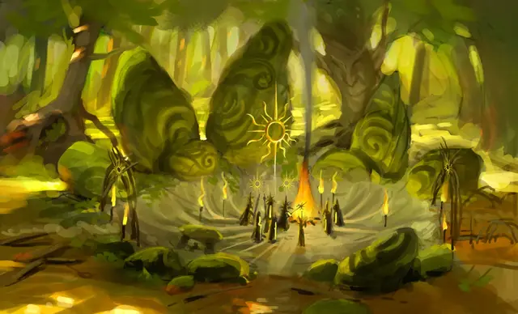

Эксперт Лорвина
Lorwyn Expert

Характеристики Сила, Телосложение, Мудрость
Черта Дитя солнца
Навыки Атлетика, Природа
Инструменты Инструменты картографа
Снаряжение Выберите А или Б: (А) Боевой посох, Инструменты картографа, Рюкзак, Корзина, 4 листа Пергамента, Верёвка, Дорожная одежда, 29 ЗМ; или (Б) 50 ЗМ
Вы родом из Лорвина, земли вечного солнца, или изучали это место с большой страстью. Вы считаете величественное существо Эйрду живым воплощением солнца и любите отправляться в причудливые приключения. Вы дорожите близкими, пусть даже только в душе — ведь вы видели, как некоторые уходили в Шэдоумур и дальше и возвращались лишь бледной тенью самих себя. И всё же вы отважны и всегда жаждете нового опыта.